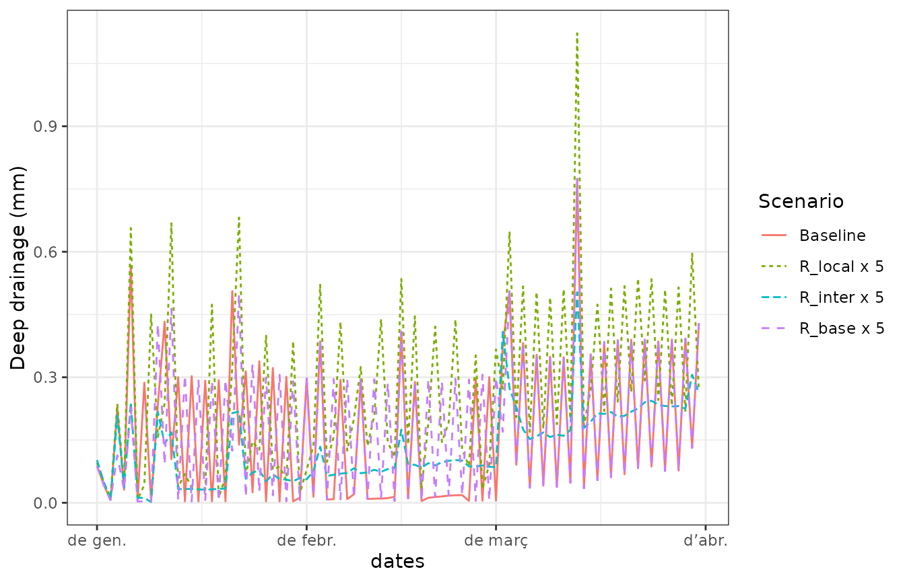
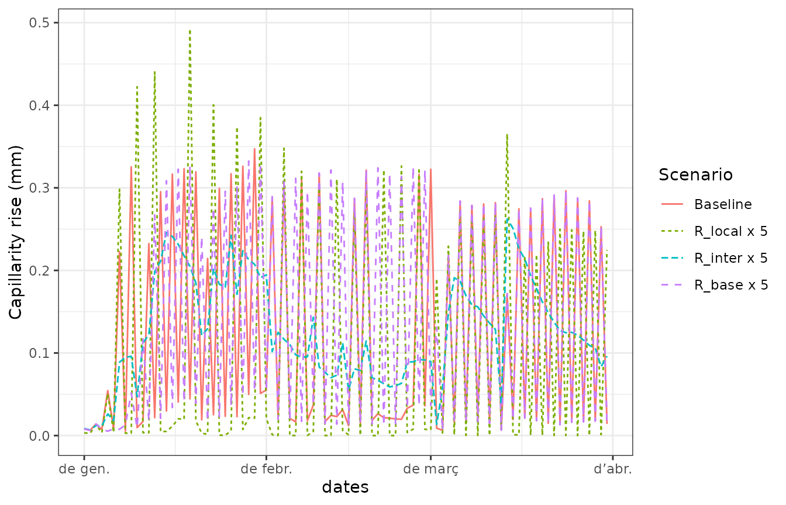
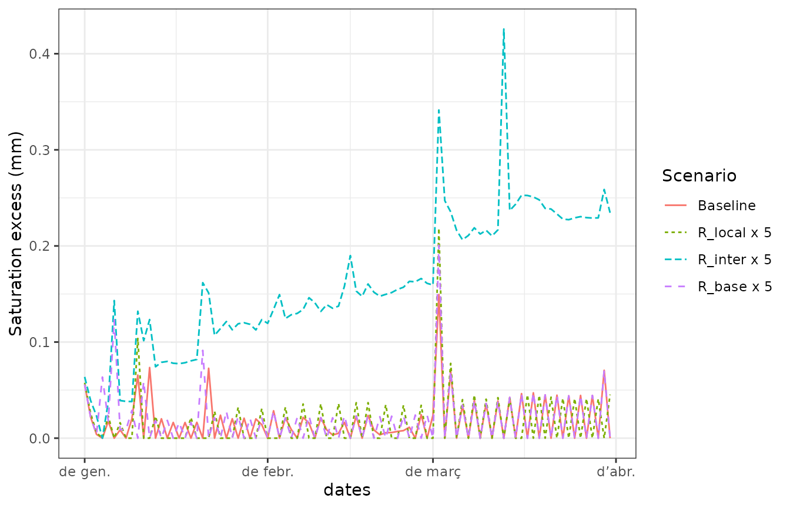
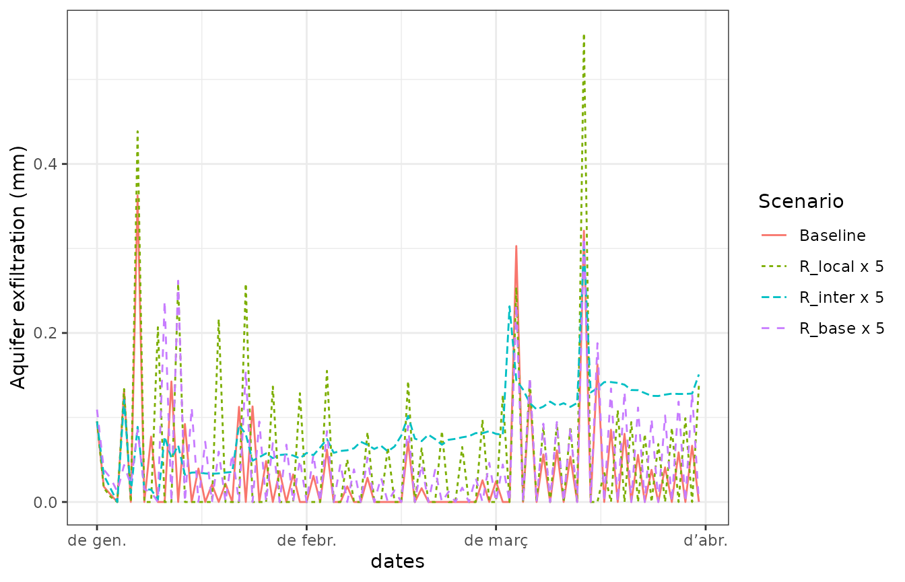
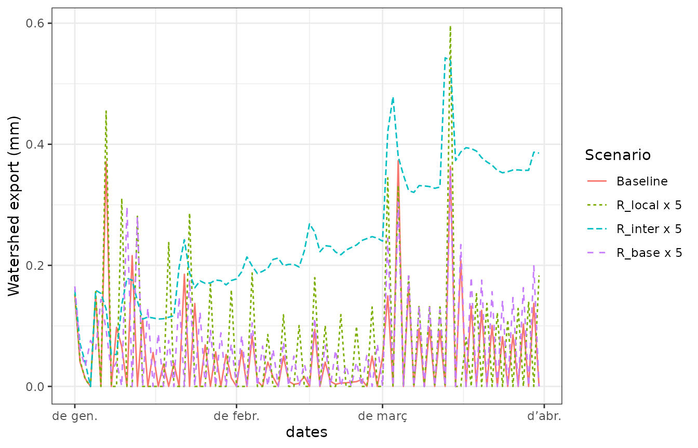
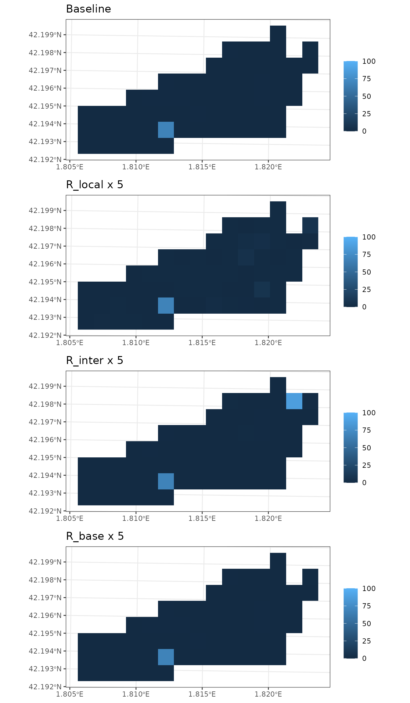

Sensitivity to watershed parameters
Miquel De Cáceres / María González
2024-04-19
TetisWatershedParameters.RmdIntroduction
The aim of this vignette is to illustrate the sensitivity of
watershed ecohydrological simulations (e.g. via
spwb_land()) to variations in three watershed parameters
for sub-model TETIS. These parameters are scaling factors of hydraulic
conductivities for soil vertical fluxes, subsurface lateral fluxes and
groundwater lateral fluxes, respectively. They are referred to as
R_localflow, R_interflow and
R_baseflow, respectively in the package.
Preparation
Here we load a small example watershed included with the package, that can be used to understand the inputs required:
data("example_watershed_burnin")
example_watershed_burnin## Simple feature collection with 66 features and 14 fields
## Geometry type: POINT
## Dimension: XY
## Bounding box: xmin: 401430 ymin: 4671870 xmax: 402830 ymax: 4672570
## Projected CRS: WGS 84 / UTM zone 31N
## # A tibble: 66 × 15
## geometry id elevation slope aspect land_cover_type
## <POINT [m]> <int> <dbl> <dbl> <dbl> <chr>
## 1 (402630 4672570) 1 1162 11.3 79.2 wildland
## 2 (402330 4672470) 2 1214 12.4 98.7 agriculture
## 3 (402430 4672470) 3 1197 10.4 102. wildland
## 4 (402530 4672470) 4 1180 8.12 83.3 wildland
## 5 (402630 4672470) 5 1164 13.9 96.8 wildland
## 6 (402730 4672470) 6 1146 11.2 8.47 agriculture
## 7 (402830 4672470) 7 1153 9.26 356. agriculture
## 8 (402230 4672370) 8 1237 14.5 75.1 wildland
## 9 (402330 4672370) 9 1213 13.2 78.7 wildland
## 10 (402430 4672370) 10 1198 8.56 75.6 agriculture
## # ℹ 56 more rows
## # ℹ 9 more variables: forest <list>, soil <list>, state <list>,
## # depth_to_bedrock <dbl>, bedrock_conductivity <dbl>, bedrock_porosity <dbl>,
## # snowpack <dbl>, aquifer <dbl>, crop_factor <dbl>The watershed state is the result of a four-year burn-in period, in
order to have aquifer and soil moisture at a (dynamic) equilibrium.
Another spatial input is needed to describe the grid topology, which in
our case is an object of class SpatRaster from package
terra:
r <-terra::rast(xmin = 401380, ymin = 4671820, xmax = 402880, ymax = 4672620,
nrow = 8, ncol = 15, crs = "epsg:32631")
r## class : SpatRaster
## dimensions : 8, 15, 1 (nrow, ncol, nlyr)
## resolution : 100, 100 (x, y)
## extent : 401380, 402880, 4671820, 4672620 (xmin, xmax, ymin, ymax)
## coord. ref. : WGS 84 / UTM zone 31N (EPSG:32631)Finally, we load an example weather data set to be used as climate forcing, as well as the usual species parameter table:
Initial values for scaling factors
Watershed simulations have overall control parameters. Notably, the user needs to decide which sub-model will be used for lateral water transfer processes, in this case:
ws_control <- default_watershed_control("tetis")The default parameterization for the three scaling factors is:
ws_control$tetis_parameters## $R_localflow
## [1] 1
##
## $R_interflow
## [1] 1
##
## $R_baseflow
## [1] 10Simulations
Since watershed simulations are time consuming, here we will only perform four simulations, i.e. a baseline plus a modification of each of the three scaling factors, one at a time.
Baseline configuration
For the baseline configuration, we set the three scaling factors to one:
ws_control$tetis_parameters$R_localflow <- 1
ws_control$tetis_parameters$R_interflow <- 1
ws_control$tetis_parameters$R_baseflow <- 1Now we launch the simulation. Focus on the values (in mm) predicted for aquifer exfiltration, saturation excess and, finally, the sum of the two sources as export runoff.
res_0 <- spwb_land(r, example_watershed_burnin, SpParamsMED, examplemeteo,
dates = dates, summary_frequency = "month",
watershed_control = ws_control)## ## ── Simulation of model 'spwb' over a watershed ─────────────────────────────────## ℹ Checking topology## ✔ Checking topology [14ms]## ## ℹ Checking 'sf' data## ✔ Checking 'sf' data [124ms]## ## ℹ Determining neighbors and discharge for TETIS## ✔ Determining neighbors and discharge for TETIS [18ms]## ## • Hydrological model: TETIS## • Number of grid cells: 120 Number of target cells: 66## • Average cell area: 10006 m2, Total area: 120 ha, Target area: 66 ha## • Cell land use wildland: 48 agriculture: 17 artificial: 0 rock: 1 water: 0## • Cells with soil: 65## • Number of days to simulate: 90## • Number of temporal cell summaries: 3## • Number of cells with daily model results requested: 0## • Number of outlet cells: 1## ℹ Building spwb input## ✔ Building spwb input [6ms]## ## ℹ 0 cells needed initialization## ✔ 0 cells needed initialization [15ms]## ## Daily simulations ■■■■■ 12% | ETA: 18s## Daily simulations ■■■■■■■■■ 27% | ETA: 15s## Daily simulations ■■■■■■■■■■■■■■ 42% | ETA: 12s## Daily simulations ■■■■■■■■■■■■■■■■■■ 58% | ETA: 8s## Daily simulations ■■■■■■■■■■■■■■■■■■■■■■■ 72% | ETA: 6s## Daily simulations ■■■■■■■■■■■■■■■■■■■■■■■■■■■ 86% | ETA: 3s## Daily simulations ■■■■■■■■■■■■■■■■■■■■■■■■■■■■■■■ 99% | ETA: 0s## Daily simulations ■■■■■■■■■■■■■■■■■■■■■■■■■■■■■■■ 100% | ETA: 0s## • Done## • Water balance check## Change in snowpack water content (mm): 0
## Snowpack water balance result (mm): 0
## Snowpack water balance components:
## Snow fall (mm) 19.19 Snow melt (mm) 19.19
##
## Change in soil water content (mm): 41.36
## Soil water balance result (mm): 41.36
## Soil water balance components:
## Infiltration (mm) 137.01 Saturation excess (mm) 2.47
## Deep drainage (mm) 44.42 Capillarity rise (mm) 0.56
## Soil evaporation (mm) 2.8 Plant transpiration (mm) 46.51
## Interflow input (mm) 52.04 Interflow output (mm) 52.04
##
## Change in aquifer water content (mm): 39.4
## Aquifer water balance result (mm): 39.4
## Aquifer water balance components:
## Deep drainage (mm) 43.75 Capillarity rise (mm) 0.55 Exfiltration (mm) 3.8
##
## Watershed lateral flows:
## Subsurface flow (mm) 51.25
## Groundwater flow (mm) 18.38
##
## Change in watershed water content (mm): 80.13
## Watershed water balance result (mm): 80.13
## Watershed water balance components:
## Precipitation (mm) 154.74
## Interception (mm) 17.47 Soil evaporation (mm) 2.76
## Plant transpiration (mm) 45.81
## Export runoff (mm) 8.58In the following we compare these values to those issued from simulations with altered scaling factors.
Increasing local vertical conductivity
We begin our sensitivity analysis by increasing the vertical conductivity five times:
ws_control$tetis_parameters$R_localflow <- 5
ws_control$tetis_parameters$R_interflow <- 1
ws_control$tetis_parameters$R_baseflow <- 1
res_L10 <- spwb_land(r, example_watershed_burnin, SpParamsMED, examplemeteo,
dates = dates, summary_frequency = "month",
watershed_control = ws_control)## ## ── Simulation of model 'spwb' over a watershed ─────────────────────────────────## ℹ Checking topology## ✔ Checking topology [10ms]## ## ℹ Checking 'sf' data## ✔ Checking 'sf' data [32ms]## ## ℹ Determining neighbors and discharge for TETIS## ✔ Determining neighbors and discharge for TETIS [14ms]## ## • Hydrological model: TETIS## • Number of grid cells: 120 Number of target cells: 66## • Average cell area: 10006 m2, Total area: 120 ha, Target area: 66 ha## • Cell land use wildland: 48 agriculture: 17 artificial: 0 rock: 1 water: 0## • Cells with soil: 65## • Number of days to simulate: 90## • Number of temporal cell summaries: 3## • Number of cells with daily model results requested: 0## • Number of outlet cells: 1## ℹ Building spwb input## ✔ Building spwb input [6ms]## ## ℹ 0 cells needed initialization## ✔ 0 cells needed initialization [14ms]## ## Daily simulations ■■■■ 11% | ETA: 19s## Daily simulations ■■■■■■■■ 24% | ETA: 16s## Daily simulations ■■■■■■■■■■■■■ 39% | ETA: 13s## Daily simulations ■■■■■■■■■■■■■■■■■ 54% | ETA: 9s## Daily simulations ■■■■■■■■■■■■■■■■■■■■■■ 70% | ETA: 6s## Daily simulations ■■■■■■■■■■■■■■■■■■■■■■■■■■ 84% | ETA: 3s## Daily simulations ■■■■■■■■■■■■■■■■■■■■■■■■■■■■■■■ 100% | ETA: 0s## • Done## • Water balance check## Change in snowpack water content (mm): 0
## Snowpack water balance result (mm): 0
## Snowpack water balance components:
## Snow fall (mm) 19.19 Snow melt (mm) 19.19
##
## Change in soil water content (mm): -17.81
## Soil water balance result (mm): -17.81
## Soil water balance components:
## Infiltration (mm) 137.01 Saturation excess (mm) 2.07
## Deep drainage (mm) 105.74 Capillarity rise (mm) 0.9
## Soil evaporation (mm) 1.61 Plant transpiration (mm) 46.3
## Interflow input (mm) 38.79 Interflow output (mm) 38.79
##
## Change in aquifer water content (mm): 98.15
## Aquifer water balance result (mm): 98.15
## Aquifer water balance components:
## Deep drainage (mm) 104.14 Capillarity rise (mm) 0.89 Exfiltration (mm) 5.1
##
## Watershed lateral flows:
## Subsurface flow (mm) 38.2
## Groundwater flow (mm) 33.71
##
## Change in watershed water content (mm): 80.61
## Watershed water balance result (mm): 80.61
## Watershed water balance components:
## Precipitation (mm) 154.74
## Interception (mm) 17.47 Soil evaporation (mm) 1.58
## Plant transpiration (mm) 45.6
## Export runoff (mm) 9.49Increasing R_localflow has the effect of increasing the
drainage from soils to the aquifer (hence, decreasing soil moisture).
Capillary rise and aquifer exfiltration increase downslope as a
consequence of the larger recharge in upslope cells.
Increasing subsurface lateral conductivity
We now focus on the lateral conductivity of subsurface fluxes (interflow):
ws_control$tetis_parameters$R_localflow <- 1
ws_control$tetis_parameters$R_interflow <- 5
ws_control$tetis_parameters$R_baseflow <- 1
res_I10 <- spwb_land(r, example_watershed_burnin, SpParamsMED, examplemeteo,
dates = dates, summary_frequency = "month",
watershed_control = ws_control)## ## ── Simulation of model 'spwb' over a watershed ─────────────────────────────────## ℹ Checking topology## ✔ Checking topology [9ms]## ## ℹ Checking 'sf' data## ✔ Checking 'sf' data [20ms]## ## ℹ Determining neighbors and discharge for TETIS## ✔ Determining neighbors and discharge for TETIS [13ms]## ## • Hydrological model: TETIS## • Number of grid cells: 120 Number of target cells: 66## • Average cell area: 10006 m2, Total area: 120 ha, Target area: 66 ha## • Cell land use wildland: 48 agriculture: 17 artificial: 0 rock: 1 water: 0## • Cells with soil: 65## • Number of days to simulate: 90## • Number of temporal cell summaries: 3## • Number of cells with daily model results requested: 0## • Number of outlet cells: 1## ℹ Building spwb input## ✔ Building spwb input [5ms]## ## ℹ 0 cells needed initialization## ✔ 0 cells needed initialization [20ms]## ## Daily simulations ■■■■■ 12% | ETA: 19s## Daily simulations ■■■■■■■ 21% | ETA: 21s## Daily simulations ■■■■■■■■■■ 31% | ETA: 20s## Daily simulations ■■■■■■■■■■■■■ 39% | ETA: 19s## Daily simulations ■■■■■■■■■■■■■■■ 48% | ETA: 16s## Daily simulations ■■■■■■■■■■■■■■■■■■ 57% | ETA: 14s## Daily simulations ■■■■■■■■■■■■■■■■■■■■■ 66% | ETA: 11s## Daily simulations ■■■■■■■■■■■■■■■■■■■■■■■ 73% | ETA: 9s## Daily simulations ■■■■■■■■■■■■■■■■■■■■■■■■■■ 82% | ETA: 6s## Daily simulations ■■■■■■■■■■■■■■■■■■■■■■■■■■■ 88% | ETA: 4s## Daily simulations ■■■■■■■■■■■■■■■■■■■■■■■■■■■■■ 93% | ETA: 2s## Daily simulations ■■■■■■■■■■■■■■■■■■■■■■■■■■■■■■■ 100% | ETA: 0s## • Done## • Water balance check## Change in snowpack water content (mm): 0
## Snowpack water balance result (mm): 0
## Snowpack water balance components:
## Snow fall (mm) 19.19 Snow melt (mm) 19.19
##
## Change in soil water content (mm): 32.96
## Soil water balance result (mm): 32.96
## Soil water balance components:
## Infiltration (mm) 137.01 Saturation excess (mm) 10.4
## Deep drainage (mm) 44.38 Capillarity rise (mm) 0.26
## Soil evaporation (mm) 2.83 Plant transpiration (mm) 46.69
## Interflow input (mm) 184.19 Interflow output (mm) 184.19
##
## Change in aquifer water content (mm): 35.62
## Aquifer water balance result (mm): 35.62
## Aquifer water balance components:
## Deep drainage (mm) 43.71 Capillarity rise (mm) 0.25 Exfiltration (mm) 7.83
##
## Watershed lateral flows:
## Subsurface flow (mm) 181.4
## Groundwater flow (mm) 19.03
##
## Change in watershed water content (mm): 68.08
## Watershed water balance result (mm): 68.08
## Watershed water balance components:
## Precipitation (mm) 154.74
## Interception (mm) 17.47 Soil evaporation (mm) 2.79
## Plant transpiration (mm) 45.99
## Export runoff (mm) 20.42Increasing lateral conductivity for subsurface fluxes increases the rate of lateral exchange (i.e. the speed of the kinematic wave), resulting in a much larger saturation excess. It also impacts the amount of aquifer exfiltration.
Increasing groundwater lateral conductivity
Finally, we perform a simulation with an increased groundwater conductivity:
ws_control$tetis_parameters$R_localflow <- 1
ws_control$tetis_parameters$R_interflow <- 1
ws_control$tetis_parameters$R_baseflow <- 5
res_B10 <- spwb_land(r, example_watershed_burnin, SpParamsMED, examplemeteo,
dates = dates, summary_frequency = "month",
watershed_control = ws_control)## ## ── Simulation of model 'spwb' over a watershed ─────────────────────────────────## ℹ Checking topology## ✔ Checking topology [10ms]## ## ℹ Checking 'sf' data## ✔ Checking 'sf' data [22ms]## ## ℹ Determining neighbors and discharge for TETIS## ✔ Determining neighbors and discharge for TETIS [15ms]## ## • Hydrological model: TETIS## • Number of grid cells: 120 Number of target cells: 66## • Average cell area: 10006 m2, Total area: 120 ha, Target area: 66 ha## • Cell land use wildland: 48 agriculture: 17 artificial: 0 rock: 1 water: 0## • Cells with soil: 65## • Number of days to simulate: 90## • Number of temporal cell summaries: 3## • Number of cells with daily model results requested: 0## • Number of outlet cells: 1## ℹ Building spwb input## ✔ Building spwb input [6ms]## ## ℹ 0 cells needed initialization## ✔ 0 cells needed initialization [15ms]## ## Daily simulations ■■■■■ 12% | ETA: 19s## Daily simulations ■■■■■■■■ 23% | ETA: 18s## Daily simulations ■■■■■■■■■■■ 34% | ETA: 16s## Daily simulations ■■■■■■■■■■■■■■■ 48% | ETA: 12s## Daily simulations ■■■■■■■■■■■■■■■■■■■■ 62% | ETA: 9s## Daily simulations ■■■■■■■■■■■■■■■■■■■■■■■ 73% | ETA: 6s## Daily simulations ■■■■■■■■■■■■■■■■■■■■■■■■■■ 84% | ETA: 4s## Daily simulations ■■■■■■■■■■■■■■■■■■■■■■■■■■■■■ 94% | ETA: 1s## Daily simulations ■■■■■■■■■■■■■■■■■■■■■■■■■■■■■■■ 100% | ETA: 0s## • Done## • Water balance check## Change in snowpack water content (mm): 0
## Snowpack water balance result (mm): 0
## Snowpack water balance components:
## Snow fall (mm) 19.19 Snow melt (mm) 19.19
##
## Change in soil water content (mm): 41.36
## Soil water balance result (mm): 41.36
## Soil water balance components:
## Infiltration (mm) 137.01 Saturation excess (mm) 2.47
## Deep drainage (mm) 44.42 Capillarity rise (mm) 0.56
## Soil evaporation (mm) 2.8 Plant transpiration (mm) 46.51
## Interflow input (mm) 52.04 Interflow output (mm) 52.04
##
## Change in aquifer water content (mm): 28.75
## Aquifer water balance result (mm): 28.75
## Aquifer water balance components:
## Deep drainage (mm) 43.75 Capillarity rise (mm) 0.55 Exfiltration (mm) 14.45
##
## Watershed lateral flows:
## Subsurface flow (mm) 51.25
## Groundwater flow (mm) 81.63
##
## Change in watershed water content (mm): 69.49
## Watershed water balance result (mm): 69.49
## Watershed water balance components:
## Precipitation (mm) 154.74
## Interception (mm) 17.47 Soil evaporation (mm) 2.76
## Plant transpiration (mm) 45.81
## Export runoff (mm) 19.22Increasing the speed of groundwater fluxes leads to a much shallower water table downslope, significantly increasing the amont of exfiltration.
Comparing predicted fluxes
df1<- res_0$watershed_balance
df1$Scenario <- "All = 1"
df2<- res_L10$watershed_balance
df2$Scenario <- "R_local x 10"
df3<- res_I10$watershed_balance
df3$Scenario <- "R_inter x 10"
df4<- res_B10$watershed_balance
df4$Scenario <- "R_base x 10"
df<- rbind(df1,df2,df3, df4)
df$Scenario <- factor(df$Scenario, levels = c("All = 1", "R_local x 10", "R_inter x 10", "R_base x 10"))Drainage
ggplot(df)+
geom_line(aes(x=dates, y =DeepDrainage, col = Scenario, linetype = Scenario))+
ylab("Deep drainage (mm)")+
theme_bw()
Capillarity rise
ggplot(df)+
geom_line(aes(x=dates, y =CapillarityRise, col = Scenario, linetype = Scenario))+
ylab("Capillarity rise (mm)")+
theme_bw()
Saturation excess
ggplot(df)+
geom_line(aes(x=dates, y =SaturationExcess, col = Scenario, linetype = Scenario))+
ylab("Saturation excess (mm)")+
theme_bw()Aquifer exfiltration
ggplot(df)+
geom_line(aes(x=dates, y =AquiferExfiltration, col = Scenario, linetype = Scenario))+
ylab("Aquifer exfiltration (mm)")+
theme_bw()
Watershed export
ggplot(df)+
geom_line(aes(x=dates, y =WatershedExport, col = Scenario, linetype = Scenario))+
ylab("Watershed export (mm)")+
theme_bw()
Flux rate maps
Drainage to aquifer
g1 <- plot_summary(res_0$sf, "DeepDrainage", date = "2001-01-01", r = r, limits = c(0, 100))+labs(title = "Baseline")
g2 <- plot_summary(res_L10$sf, "DeepDrainage", date = "2001-01-01", r = r, limits = c(0, 100))+labs(title = "R_local x 10")
g3 <- plot_summary(res_I10$sf, "DeepDrainage", date = "2001-01-01", r = r, limits = c(0, 100))+labs(title = "R_inter x 10")
g4 <- plot_summary(res_B10$sf, "DeepDrainage", date = "2001-01-01", r = r, limits = c(0, 100))+labs(title = "R_base x 10")
cowplot::plot_grid(g1, g2, g3, g4 , ncol = 1, nrow = 4)
Sub-surface fluxes
g1 <- plot_summary(res_0$sf, "InterflowOutput", date = "2001-03-01", r = r, limits = c(0, 160))+labs(title = "Baseline")
g2 <- plot_summary(res_L10$sf, "InterflowOutput", date = "2001-03-01", r = r, limits = c(0, 160))+labs(title = "R_local x 10")
g3 <- plot_summary(res_I10$sf, "InterflowOutput", date = "2001-03-01", r = r, limits = c(0, 160))+labs(title = "R_inter x 10")
g4 <- plot_summary(res_B10$sf, "InterflowOutput", date = "2001-03-01", r = r, limits = c(0, 160))+labs(title = "R_base x 10")
cowplot::plot_grid(g1, g2, g3, g4 , ncol = 1, nrow = 4)
Groundwater fluxes
g1 <- plot_summary(res_0$sf, "BaseflowOutput", date = "2001-03-01", r = r, limits = c(0, 180))+labs(title = "Baseline")
g2 <- plot_summary(res_L10$sf, "BaseflowOutput", date = "2001-03-01", r = r, limits = c(0, 180))+labs(title = "R_local x 10")
g3 <- plot_summary(res_I10$sf, "BaseflowOutput", date = "2001-03-01", r = r, limits = c(0, 180))+labs(title = "R_inter x 10")
g4 <- plot_summary(res_B10$sf, "BaseflowOutput", date = "2001-03-01", r = r, limits = c(0, 180))+labs(title = "R_base x 10")
cowplot::plot_grid(g1, g2, g3, g4 , ncol = 1, nrow = 4)